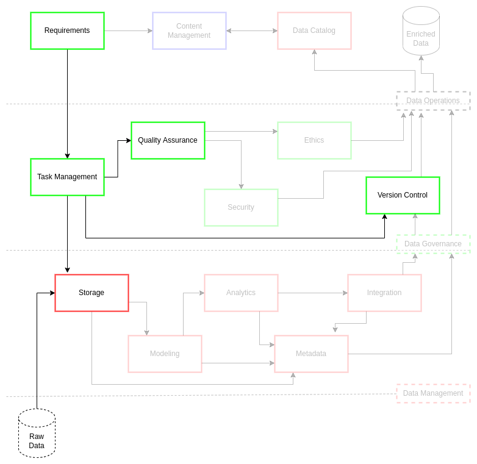

Task Management#
Data-driven practices require consistent and rigorous task management (TM). Data-driven practices mobilize production of data services and enable people to enhance their efforts in support of an organization’s data vision. The challenge is to realize this data vision through consistently improving practices from a solid baseline of data governance and data management standards.[1] These standards enable accurate representation of data processes and meaning while forwarding the evolution of specified personnel and technologies as business requirements shift. This shift necessitates a task management body of practices to ensure rapid reconfigurations from the baseline are possible while maintaining a quality of outputs consistent with the organization’s strategic data vision. Otherwise, the lack of a task management body of practices or poor use of task management systems undermines the intent and output of data systems and a misappropriation of data worker efforts.
Recent literature [1][2][3][4] suggest a balance of existing and new practices to support structuring task management for data operations. In 2001, Agile emerged as an effort to guide consistent development practices which are adaptable and open to a broad set of applications.[5] As a result, methodologies like Scrum, and later systems like Kanban and Scrumban (among many others), shifted to more flexible implementations for developer task management.[6] In the domain of data operations[1], Agile is an expected standard which is often mobilized within more specific Developer Security Operations (DevSecOps)[7] practices. This approach leads to more responsive data governance systems [3] and an improved value for the associated organization. This combination of improved communication and organizational relationship via flexible data operations and data management facilitate effective data products and services delivery to stakeholders and organization decision makers.[2]
The task management component of data operations should adhere to best practices for an effective Agile-based systems. ciuTshi situates guidelines to encourage consistent and rigorous practices with maximum adaptability and rapid task shift. This standard also makes inclusion of more detailed DevSecOps and waterfall approaches possible for projects that fall within variable delivery deadlines. This modular approach to task management makes inclusion of newer methodologies simplified through pre-existing integrations with version control systems (VCS) and content management system (CMS) practices able to accommodate TM shifts. The TM practices described in following sections facilitate improved business requirements capture, baseline metrics for projects, and requirements shift over the course of a project.
Challenge#
Simplified Task Management - This ensures that multiple data projects adhere to consistent task management practices and that all data team members are familiar with practices.
Consistent Management Practices - Process efficacy and lineage are a key part of task management practices which ensures adaptations in this practices do not invalidate previous efforts.
Rigorous Requirements Processing - The simplified task management practices guide enforces rigorous and cyclical re-examination of business requirements from cradle to grave, documenting shifts in requirements and recording the process as a whole.
Timeline Projection - Delivery on schedule for a set of business requirements is a critical aspect of this system. Implementation of these practices makes prediction for initial and adjusted delivery dates possible, allowing data management, data operations, and project managers to adjust accordingly.
Develop Data Operations Metrics - The implementation of consistent and rigorous task management allows data operations and data managers to adjust practices and personnel in a timely and cost effective manner while streamlining justification for data architecture and IT system resources.
Goals#
Simplify consistent task management
Produce and examine requirement-driven tasks
Produce and analyze task and project metrics
Reduce deliverable timelines
Improve communication on data-centric requirements
Task Management Practices#

ciuTshi takes a Scrum approach to task management for data management. Scrum is a “lightweight standard that helps people, teams and organizations generate value through adaptive solutions for complex problems.”[6] This system helps guide business requirements through the often complex process of deconstructing requirements into tasks for the backlog. The Scrum team then prioritize and organize tasks into sprints. These sprints can be iteratively adjusted and reviewed by stakeholders to ensure the product is delivered on time at a level of quality defined in the requirements.
Scrum was selected as it is a simple and well-structured approach to task management. Sprints are an excellent approach for projects that are slated for shorter timeframes and may persist beyond the initial business requirements pending stakeholder review. As a result, a scrum team should “Keep it simple” when implementing these practices for a project. Simplicity allows stakeholders to maintain transparency and adaptability through cycles of inspection and adjustment to requirements and/or task assignment.
Scrum is constructed around a very simple sprint cycle: Plan, Build, Test, Review. A sprint cycle takes from one to three weeks and is generally dictated in the planning phase. This simple sprint practice allows for incremental development over variable timeframes.
What follows is an abbreviated description of the Scrum process with variations from other Agile methodologies. These practices are adaptable, iterative cycles for task management of data operations. That being said, the core Scrum tenets and steps should be followed initially by all parties as described below. This ensures the data product or service is efficiently developed and delivered on deadline to high standard of quality and security.
Roles#
In the course of the task management process, there are key roles that aid the facilitation of data resources from data operations to project management.
Product Owner
Scrum Master
Scrum Team
Key Definitions#
User Story - A user story is a statement in the format “As a — I need — so that —.” that assists the scrum master and team to turn requirements into achievable tasks.
SMART Goal - An acronym (e.g., Specific, Measurable, Achievable, Realistic, Timely) that assists in goal setting.
Backlog - A list of all tasks, derived from valid business requirements, associated with a data product and/or service. These tasks are refined, ordered, and prioritized for inclusion in sprints by the Team.
Sprint Backlog - A list of tasks selected from the Backlog and prioritized for a sprint. These are selected by the Team and confirmed by the Scrum Master. The Scrum Master will track their progress to ensure Daily Scrums and Sprint Planning adhere to original projections.
In Progress - A list of tasks currently being actioned by Team members populated from the Sprint Backlog.
Sprint - An event that is assigned a fixed time to complete a selected set of tasks.
Burndown Chart - A chart used to visualize what work is left to do (y axis) and how much time is left to complete said work (x axis).
Velocity Chart - A chart used to visualize how many tasks (y axis) were delivered per sprint (x axis).
Definition of Done - The described final state for a product that meets the quality standard expected for delivery to the customer(s).
Events & Workflow#
The following events and their order present a simplified workflow for sprint managements throughout the course of a project.
Backlog#
Roles
Product Owner
Scrum Master
Once a set of requirements are approved, the scrum master for a project will begin work with the team to populate the backlog. User story format should be used to transfer requirements into a collection of feasible sprint tasks. The use of SMART goal structures may assist in adding a level of scope to the user stories that would make them achievable within a 1 to 3 week sprint window. The use of a task management system should be considered to better structure these efforts collaboratively using the standard base template for the Data Team Board Setup.
The backlog should initially cover all major components for a project based on the requirements process output. Once sprints begin for a project, the backlog should also reflect major and minor improvements derived from updated product owner’s requirements. The scrum master and team have control over the granularity of the backlog tasks, determining when to break a task into subtasks. These subtasks are generated to fit a particular sprint window or to add detail to an existing task/subtask.
All tasks in the backlog must align with the product goal. This goal is the end product as outlined and detailed during the requirements process. The scrum master and team use the product goal to prioritize and scope sprints for optimal productivity. To this end, the task management system used must utilize burndown and velocity charts to track progress towards the final product goal and adjust resources as needed during sprint planning and daily scrum meetings.
Refer to the Requirements section for details on the requirements practices and template schemas.
Sprint#
Roles
Scrum Master
Team
Sprints are one to three week events in which prioritized tasks are ordered and scoped for completion. The regularity and structure provided by a sprint minimizes the need for meetings outside of standard Scrum events. Leveraging sprints results in increased transparency and optimization of team efforts and system resources. Shorter sprints can be leveraged for exploratory engagements for product conceptualization while longer sprints can be leveraged for complex feature implementations that adapt around personnel and infrastructure limitations. The sprints are designed to give the scrum team flexibility to adapt to the conditions for successful product goal fulfillment.
A sprint must observe a few general guidelines.
First, the product backlog is refined as needed (e.g., tasks, subtasks, task omissions).
Second, the quality of the product or service must be as good or better than when the sprint began (e.g., product or service is increasingly achieving the definition of done as outlined in the product goal).
Third, no changes should be made to the sprint and its goal post-planning, but scope can be renegotiated if the product owner introduces compelling justification (e.g., the end customer has cancelled the project or their has been demand for changes that would constitute a completely new business requirements engagement).
What follows are Scrum events that generally constitute a sprint workflow.
Sprint Planning - The Scrum Team discussed and finalizes a plan for what tasks are to be completed for a given sprint. The plan should address why the sprint is valuable towards the product goal, what tasks are to be done, and how each task will be completed. Tasks from the Product Backlog may be reviewed, refined, broken into subtasks, and placed into the Sprint Backlog for a Sprint. Each task should be checked to ensure they have a Definition of Done and projected duration prior to sprint inclusion. Finally, the Scrum Master will present the Sprint concept to the Product Owner to ensure its inline with the Product Goal and current requirements.
Sprint Backlog - The sprint backlog is the prioritized list of tasks from the product backlog to be completed during the sprint. This list is populated following the Sprint Planning event. The sprint backlog and the rationale behind completing its tasks towards the Product Goal should be captured in the Sprint Goal (placed in the Sprint Goal card for each sprint using the information from the Sprint Planning event).
Scrum Checks - This is traditionally called the Daily Scrum in which the Scrum Team check in at the same time, everyday, for 15 minutes for updates and adjustment to the Sprint. Within the scope of the ciuTshi standard and simplified communications technologies, Scrum Masters may dictate an alternative method and interval to substitute for the daily, en-vivo meeting. Such methods may include a regular deadline for task label updates, a regular summary message via the task card comment section, and 1-on-1 meetings with team members for identified sprint challenges and task delegation shifts. In addition to the Scrum Team check-in, there may also be a similar, higher-level check-in for Scrum Masters across different projects. This Scrum Masters Check would improve communications on parallel efforts, identify shared challenges, and encourage rapid adjustments across projects for increased efficiencies and reduced conflicts as multiple sprints occur simultaneously.
Sprint Review - The sprint review is another planning meeting held at the conclusion of a sprint. This meeting gauges the effects of the sprints on the product goal, discussing any shifts in the tasks, the effects on task completion due to shifts, and refinement of the Product Backlog prior to the next Sprint. This should take no longer than three hours to complete. The Scrum Master will take the outcomes from this meeting to the Product Owner: this engagement will aid in setting the scope and direction for the next sprint. Burndown and velocity charts should be updated at this time. The Scrum Master should maintain these reviews for documentation during the final product retrospective.
Sprint Retrospective - Similar to the sprint review, the sprint retrospective is a meeting held at the end of a sprint to review process improvements and adjustments to quality standards for the sprint team. Stated another way, the sprint retrospective is team-focused where the sprint review is product focused. This should cover topics such as individual challenges, social conflicts, and challenges with processes or tools. This should take no longer than three hours to complete. The Scrum Master can use the best practices and challenges from the Team to shift resources and personnel to improve following sprints and the product’s Definition of Done. The Scrum Master should maintain these retrospectives for documentation during the final product retrospective.
Potential MVP#
Roles
Product Owner
Scrum Master
In the course of completing a sprint, this may coincide with the Product Owner’s Minimal Viable Product (MVP) for the data product or service. The definition of the MVP should be in the final requirements and reflected in the Product Goal. The MVP is generally achieved when all tasks have been completed to a state of Done, fulfills the minimum necessary outcomes as defined by the Product Owner, and meets the sufficient quality standards as defined by the Scrum Team. The MVP status should be indicated for a given sprint in the Sprint Goals during the Planning phase. This status should also be tracked for any outstanding features that may delay verification and delivery of the MVP to the Product Owner. Scrum Masters should increase Scrum Checks and communication with the Product Owner to make sure timelines and MVP standards are known and agreed upon. This increased communication endeavors to avoid unnecessary stoppages or emergent challenges for the Team. It may be advisable for the Scrum Master to tentatively plan a proceeding number of Sprints to account for any anticipated requirement addendum derived from initial customer and Product Owner interactions.
Retrospective#
Roles
Product Owner
Scrum Master
Team
Upon completion of a data product or service project, all stakeholders should hold a final retrospective to capture best practices, key performance indicators (KPI), and customer feedback. Stakeholders will also review internal process notes, remaining backlogs, and metrics (e.g., burndown and velocity charts). These reviews will account for any shifts required in the data operation practices or the Task Management document more specifically. Additionally, these artifacts may indicate other customers or derivative projects, providing new opportunities for research and outreach efforts.
Artifacts and Measures#
Over the course of the project, there are several artifacts and measures that must be structured and archived for the retrospective and reviews for a product.
Backlog Over the course of a project, the user stories and their adjustment due to requirements or sprints will be captured over the course of the project. Boards within the task management system should be version controlled weekly or whenever significant changes occur to the product goal or sprint scope.
Sprint Backlog The legacy of the sprint backlog and its associated changes is critical in the growth of improved sprint practices for existing and future projects. Sprint backlog should be captured by the version control process for the task management system.
Burndown Chart These charts will aid during the retrospective in addressing efficiencies and optimizations for the task management practices and the data operations system more broadly.
Velocity Chart These charts will aid in refining sprint processes which will be reflected in the task management practices and its associated documents.